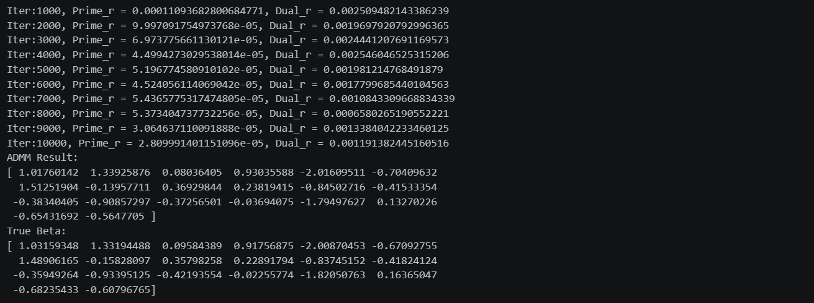
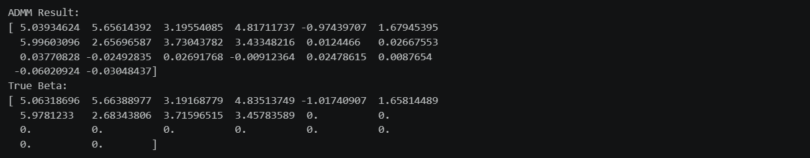

本期内容
- 优化问题的难点
- ADMM算法
- 代码演示
优化问题的难点
许多统计机器学习模型可以写成 min L(β) = Σ ℓᵢ(β)。如果 ℓᵢ 足够光滑，我们可以用梯度下降、牛顿法等做优化，还能按行切分数据并行计算。但现实中很多重要问题并不光滑：
非光滑问题包括 Lasso（L1正则化）、LAD回归（绝对值损失）、SVM（hinge损失）。这些函数在关键位置不可导，比如绝对值函数在 x=0 处不可导，而 Lasso 的稀疏解恰好落在 βⱼ=0 的位置，传统梯度法直接失效。此外还有带约束的问题，比如 SVM 的参数约束，普通无约束方法无法直接处理。
现有方法的局限：次梯度法可以替代梯度，但收敛速度慢、步长选择敏感，在分布式场景中仍然需要频繁通信。分布式优化的核心矛盾是本地计算很快，但参数/梯度通信很贵。
ADMM的思路：把同一个变量复制一份，将原问题拆成几个容易的子问题。比如 Lasso 拆成 β 负责光滑损失、z 负责非光滑惩罚，通过约束 β-z=0 让两者一致。这样非光滑部分可以通过近端算子（如软阈值函数）显式计算，光滑部分保持原有方法，交替更新后再调整乘子逐步满足约束。
ADMM 算法
一般形式
ADMM 解决如下问题：
$$ \min_{x,z} \; f(x) + g(z) \quad \text{s.t.} \quad Ax + Bz = c $$- $f$ 和 $g$ 通常是凸函数
- $Ax + Bz = c$ 是线性约束
- $x$ 和 $z$ 分别对应问题的不同结构（如光滑部分和非光滑部分）
求解思路
构造增广拉格朗日函数
$$ L_\rho(x, z, y) = f(x) + g(z) + y^T(Ax + Bz - c) + \frac{\rho}{2}\|Ax + Bz - c\|_2^2 $$- $y$：拉格朗日乘子，记录约束违反的程度
- $\rho$：惩罚参数，控制“让 $x$ 和 $z$ 保持一致”的力度
- 二次项 $\frac{\rho}{2}|\cdot|^2$：让子问题有唯一解，让算法更稳定
Step1:固定 $z$ 和 $u$，更新 $x$
$$ x^{k+1} = \arg\min_x \; f(x) + \frac{\rho}{2}\|Ax + Bz^k - c + u^k\|_2^2 $$此时 $z^k$ 和 $u^k$ 是已知常数，子问题通常是光滑优化问题。
Step2:固定 $x$ 和 $u$，更新 $z$
$$ z^{k+1} = \arg\min_z \; g(z) + \frac{\rho}{2}\|Ax^{k+1} + Bz - c + u^k\|_2^2 $$此时 $x^{k+1}$ 和 $u^k$ 是已知常数，子问题通常可通过近端算子直接写出显式解。
Step3:更新 $u$
$$ u^{k+1} = u^k + Ax^{k+1} + Bz^{k+1} - c $$$u$ 记录历史上 $x$ 和 $z$ 不一致的总量，差距越大，下一轮拉回的力度越大。
收敛条件
同时观察两个残差：
原始残差：衡量约束是否满足
$$ r^{k+1} = Ax^{k+1} + Bz^{k+1} - c $$对偶残差：衡量迭代是否稳定
$$ s^{k+1} = \rho A^T B (z^{k+1} - z^k) $$停止准则：当 $|r^k| < \varepsilon_{\text{primal}}$ 且 $|s^k| < \varepsilon_{\text{dual}}$ 时，算法收敛。
例子：Lasso
原问题
$$ \min_\beta \; \frac{1}{2}\|y - X\beta\|_2^2 + \lambda\|\beta\|_1 $$变量拆分
$$ \min_{\beta,z} \; \frac{1}{2}\|y - X\beta\|_2^2 + \lambda\|z\|_1 \quad \text{s.t.} \quad \beta - z = 0 $$对应标准形式：$f(\beta) = \frac{1}{2}|y - X\beta|_2^2$，$g(z) = \lambda|z|_1$，$A = I$，$B = -I$，$c = 0$
三步更新
Step 1：更新 $\beta$
$$ \beta^{k+1} = (X^TX + \rho I)^{-1}\big(X^Ty + \rho(z^k - u^k)\big) $$这是一个带二次惩罚的最小二乘问题，矩阵 $(X^TX + \rho I)$ 只需计算一次。
Step 2：更新 $z$（软阈值）
$$ z^{k+1} = S_{\lambda/\rho}\big(\beta^{k+1} + u^k\big) $$其中 $S_\tau(a) = \text{sign}(a) \cdot \max(|a| - \tau, 0)$，逐元素操作。
Step 3：更新 $u$
$$ u^{k+1} = u^k + \beta^{k+1} - z^{k+1} $$Lasso 收敛条件
代入一般形式，$A = I$，$B = -I$，$c = 0$：
- 原始残差：$r^{k+1} = \beta^{k+1} - z^{k+1}$
- 对偶残差：$s^{k+1} = -\rho (z^{k+1} - z^k)$
停止条件：$|\beta^k - z^k| < \varepsilon_{\text{primal}}$ 且 $\rho|z^{k+1} - z^k| < \varepsilon_{\text{dual}}$
例子：LAD
原问题
$$ \min_\beta \; \|X\beta - y\|_1 $$变量拆分
$$ \min_{\beta,z} \; \|z\|_1 \quad \text{s.t.} \quad X\beta - y - z = 0 $$对应标准形式：$f(\beta) = 0$，$g(z) = |z|_1$，$A = X$，$B = -I$，$c = y$
三步更新
Step 1：更新 $\beta$
$$ \beta^{k+1} = (X^TX)^{-1}X^T(y + z^k - u^k) $$这是普通最小二乘，每次重新计算右侧即可。
Step 2：更新 $z$（软阈值）
$$ z^{k+1} = S_{1/\rho}\big(X\beta^{k+1} - y + u^k\big) $$阈值是 $1/\rho$，与 Lasso 不同。
Step 3：更新 $u$
$$ u^{k+1} = u^k + X\beta^{k+1} - y - z^{k+1} $$LAD 收敛条件
代入一般形式，$A = X$，$B = -I$，$c = y$：
- 原始残差：$r^{k+1} = X\beta^{k+1} - y - z^{k+1}$
- 对偶残差：$s^{k+1} = -\rho X^T (z^{k+1} - z^k)$
停止条件：$|X\beta^k - y - z^k| < \varepsilon_{\text{primal}}$ 且 $\rho|X^T(z^{k+1} - z^k)| < \varepsilon_{\text{dual}}$
代码演示
LAD ADMM实现
Step1:准备工作
|
|
Step2:初始化
|
|
Step3:迭代更新
|
|
运行结果如下：

Lasso ADMM实现
Step1: 准备工作
|
|
Step2: 初始化
|
|
Step3: 迭代更新
|
|
运行结果如下：
